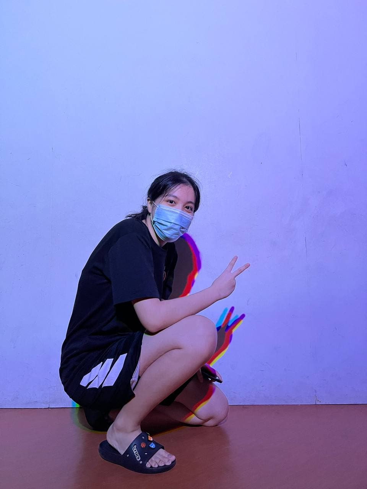

Name : Wan Li Xin Yuan
Course : Diploma In Mechatronics And Robotics
School : Mechanical And Aeronautical Engineering, Singapore Polytechnic
Year : 2
Email: WLXY88.20@ichat.sp.edu.sg
Hi, my name is Xin Yuan, XY for short and I am a student in Singapore Polytechnic and I am Year 2 and currently studying Mechatronics abd Robotics. I have chosen that course because i have a strong interest in robots and coding
Mechatronics is a mixture of Mechanical , electronics and programming , integrated with robots to equip you with essential knowledge and skills of the multidisciplinary fields to enable you to install, set up, operate, maintain and service industrial automated production equipment and systems.
I chose this module as my elective becasue it allows me to learn new skills that my course do not provide. I also like coding which this module allows me to code my very own website at the same allowing me to learn new programming language.